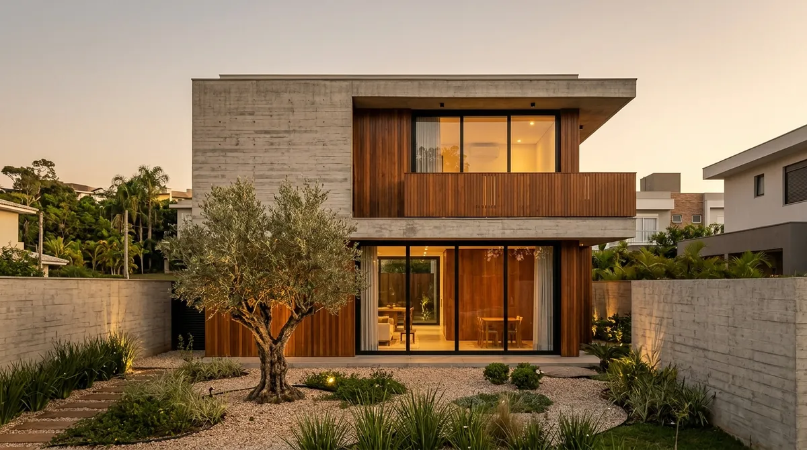
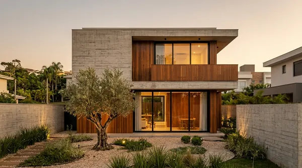
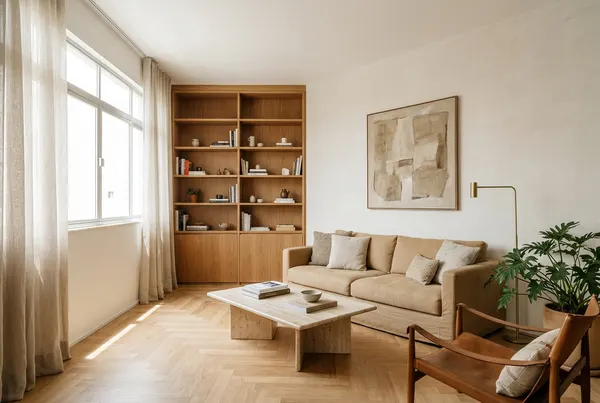
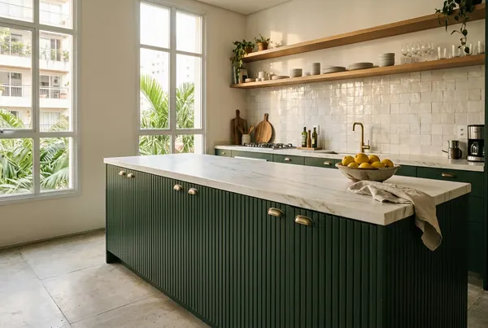
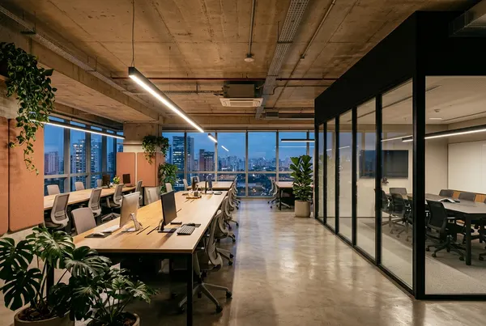
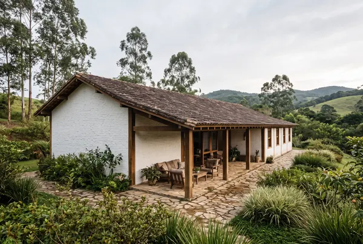
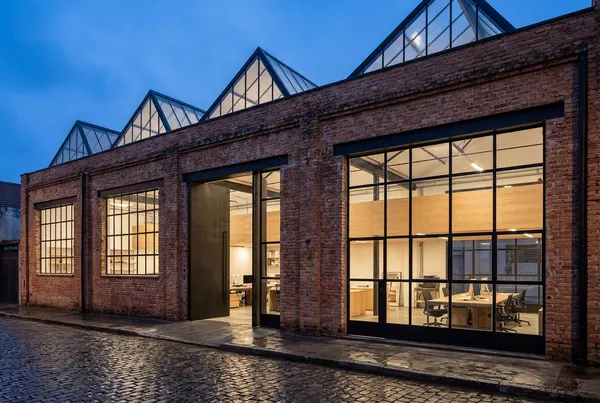
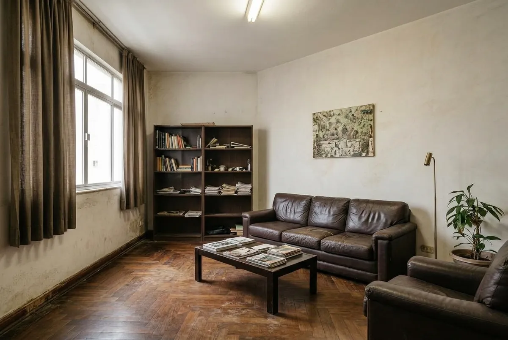

Arquitetura e obras · São Paulo e região
Projeto e obra com um só responsável, do diagnóstico à entrega.
A Tijolo & Cal assina o projeto e conduz a execução. Cada etapa tem escopo, prazo e valor combinados antes de começar.
Informe tipo de obra, bairro e prazo. O retorno traz a agenda da visita técnica.

- Arquitetura
- Engenharia civil
- Interiores e marcenaria
- Gestão de obra
01 — Obras
Seis projetos de exemplo, de casa nova a retrofit
Cada ficha traz metragem, prazo e o resultado. Abra um projeto para ver o escopo e a imagem ampliada.
-

Nº 01
Concreto aparente e ipê, com a obra entregue no cronograma aprovado.
-

Nº 02
De apartamento dos anos 90 a uma sala de luz contínua. Ver antes e depois
-

Nº 03
Ilha de marcenaria ripada que organiza o preparo e a convivência.
-

Nº 04
Obra faseada para a equipe continuar trabalhando no andar.
-

Nº 05
Um volume baixo e uma varanda funda, pensados para o clima da serra.
-

Nº 06
A fachada de tijolo foi preservada e o interior ganhou mezanino.
Todas as imagens são ilustrativas, geradas por IA para esta demonstração. Em um site real, entram as fotos das obras do escritório.
02 — Antes e depois
Apartamento Pinheiros, mesma janela, outra sala
Arraste o controle ou use as setas do teclado para comparar o ambiente antes e depois da reforma.

- O que mudou
- Piso, forro, esquadrias, elétrica, marcenaria e iluminação.
- Prazo
- 5 meses de obra, com 6 semanas de projeto antes.
- Área
- 112 m², apartamento de 1994 (exemplo).
03 — Como trabalhamos
Quatro etapas, cada uma com prazo
Ao fim de cada etapa há uma entrega por escrito. A decisão de seguir para a próxima é do cliente.
-
Diagnóstico
1 a 2 semanas
Visita técnica, levantamento de medidas e leitura do terreno ou do imóvel. Conversa sobre uso, verba e prazo.
Entrega: escopo e faixa de investimento por escrito.
-
Projeto
4 a 8 semanas
Estudo preliminar, projeto executivo e compatibilização com estrutura e instalações. Orçamento detalhado por etapa.
Entrega: caderno de projeto e orçamento fechado.
-
Execução
De 8 semanas a 14 meses, conforme o escopo
Cronograma semanal, relatório fotográfico quinzenal e medição mensal. Mudanças de escopo só entram com aditivo aprovado.
Entrega: obra medida e documentada a cada mês.
-
Entrega
1 a 2 semanas
Vistoria conjunta, lista de pendências resolvida e manual de uso e manutenção do imóvel.
Entrega: termo de garantia e acervo técnico.
04 — Avaliações
Avaliações no Google
Em um site real, este bloco exibe a nota e os depoimentos do perfil do escritório no Google. Aqui, tudo é exemplo.
Nota de exemplo: 4,9 de 5
Nota ilustrativa, sem relação com clientes reais.
Exemplo
-
O cronograma semanal e o relatório de fotos deixaram a obra previsível. A entrega veio com vistoria item por item.
Marina T. · reforma de apartamento Depoimento de exemplo
-
A marcenaria já nasceu compatibilizada com as instalações. Não houve retrabalho em obra.
Rafael A. · casa nova Depoimento de exemplo
-
Orçamento detalhado por etapa, com as variações de custo explicadas antes de acontecerem.
Helena C. · escritório Depoimento de exemplo
05 — Orçamento
Pedir orçamento
Três informações bastam para a primeira conversa. O formulário monta a mensagem e abre o WhatsApp.